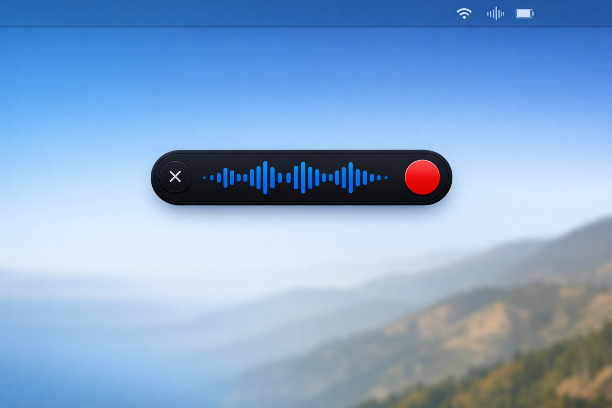

Press a shortcut, speak, and your words appear anywhere. Powered by Whisper. Nothing leaves your device.

Whisper.cpp processes all audio locally. Zero network calls, zero cloud, zero trust issues.
Press the shortcut from any app. Speak. Release. Text appears at your cursor instantly.
Built for M-series. Fast inference, low power draw, minimal memory footprint.
No sign-up, no API keys, no telemetry, no analytics. Open it and use it.
Tiny for speed, Base for balance, Small for accuracy. Pick what works for you.
Custom rules to auto-correct or reformat transcriptions to match your style.
| OpenFlow | Wispr Flow | |
|---|---|---|
| Price | Free | $8/mo |
| Open source | ||
| Privacy | 100% local | Cloud |
| Works offline | ||
| Account required | No | Yes |
| Usage limits | None | Plan-based |
Hit ⌃ ⌥ Space from any app. The HUD appears — OpenFlow is listening.
Talk as you normally would. Whisper transcribes your speech entirely on your device.
Stop recording. Your words are inserted at the cursor — Slack, email, docs, anywhere.
No account. No cloud. No limits. Download, install, speak.